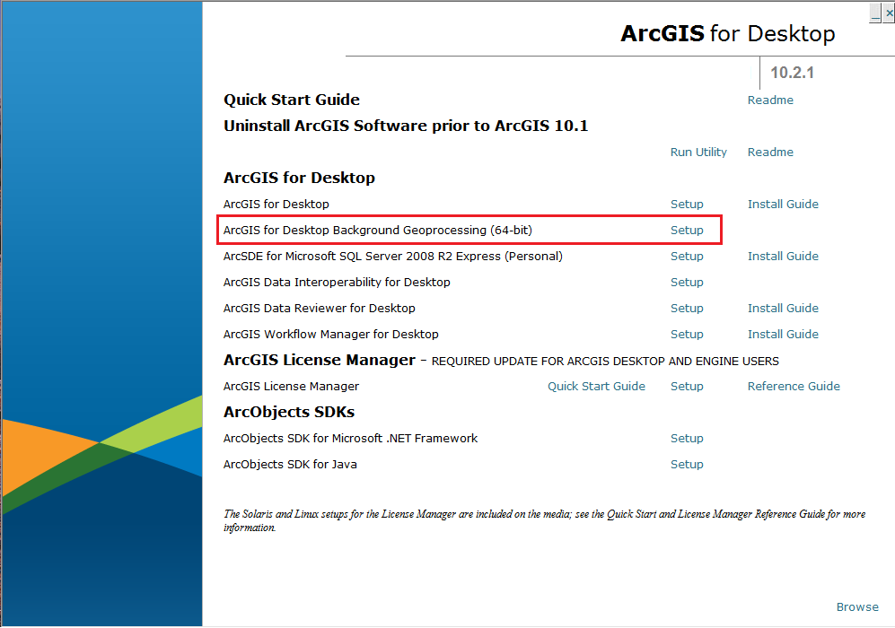
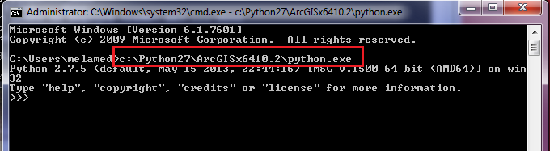
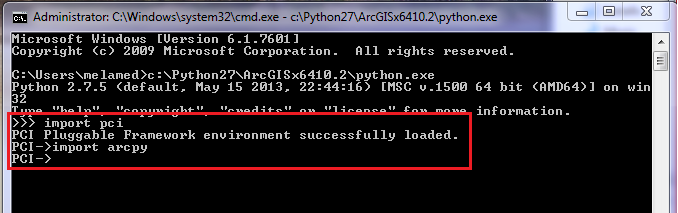

Integration with ArcGIS (ArcPy)¶
This section provides information about how to setup Geomatica’s and ArcPy’s python libraries so that they can be used together cleanly. Some basic error handling concepts are also exposed in this section for both Geomatica and ArcPy.
At the bottom of this page, you will find a simple example that demonstrates how to combine ArcPy functions with Geomatica’s python functions for creating powerful integrated workflows.
Installing ArcGIS 64bit Background Geoprocesses¶
In order to use Geomatica’s geospatial Python library with ArcPy, users, must install ArcGIS’ 64bit Background Geoprocesses. This is required, because you cannot call Geomatica’s 64bit modules with ArcGIS’ native 32bit modules. Therefore, it is necessary to install ArcGIS’ 64bit background geoprocesses.
This section provides step-by-step instructions for installing the ArcGIS 64bit Background Geoprocesses
Steps:
1. Install ArcGIS 10.2.1 or later
2. Acquire the ArcGIS for Desktop installation CD or the digital .iso file
Note: You may need to install a virtual DVDrom (Daemon Tools Lite)3. Click Setup next to ArcGIS for Desktop Background Geoprocessing (64-bit)
4. Follow the prompts and install with the default settings
- 5. Verify your installation - Navigate to C:Python27 and make sure that the
- folder ArcGISx6410.2 is found in the python27 directory

Import ArcPy and Geomatica Python Libraries and verify configuration¶
This section provides instructions on how to verify that the ArcGIS 64bit Background Geoprocessing and Geomatica’s Python library are properly installed and configured.
1. Open a command prompt
2. Navigate to and open the python executable in the ArcGISx6410.2 directory, which will start python’s interactive mode
Note: When executing python scripts that call Geomatica’s and ArcGIS’ python libraries, it is required that you launch the script with the python executable in C:Python27ArcGISx6410.2python.exe3. Using Python’s interactive mode, type the following to verify Geomatica’s and ArcGIS’ python libraries are correctly configured:
#verify Geomatica's python library import pci #verify ArcGIS' python library import arcpyNote: If Geomatica’s library is correctly configured, the statement, “PCI Pluggable Framework environment successfully loaded.” will be printed to the terminal. If ArcPy’s library is successfully configured nothing will be printed to the terminal. Both libraries will print error messages if there is a problem

Handling Geomatica and ArcPy Exceptions¶
This example demonstrates how to handle exceptions that may result from incorrectly invoking a Geomatica function in Geomatica and ArcPy.
Click here for more examples of error handling with ArcPy.
from pci.pansharp2 import pansharp2 from pci.exceptions import PCIException import arcpy #Geomatic Python Try-except statement ms_file = r"c:\NewYorkk_multispectral.pix" #this file is incorrectly spelt and thus, does not exist ms_channels = [1,2,3,4] #pansharpen channels 1 to 4 (Red, green, blue and NIR) pan_file = r"c:\NewYork_panchromatic.pix" out_file = r"c:\NewYork_pansharpened.pix" try: pansharp2(ms_file, ms_channels, [], pan_file, [], out_file, [], "", [], "", "pix", "tiled512") except PCIException, e: print e except Exception, e: print e #ArcPy Try-except statement try: # Execute the Buffer tool # arcpy.Buffer_analysis("c:/transport/roads.shp", "c:/transport/roads_buffer.shp") except Exception as e: print e.message # If using this code within a script tool, AddError can be used to return messages # back to a script tool. If not, AddError will have no effect. arcpy.AddError(e.message)
Combining Geomatica and ArcPy Functions¶
This recipe uses Geomatica’s library to automatically interpolate a DSM from LIDAR data. Then use ArcPy to calculate 3D visibility polygons from specific points of interest (POIs)
import arcpy.mapping import locale import os import arcpy from pci.vdemingest import vdemingest from pci.vdemsetup import vdemsetup from pci.vdemint import vdemint from arcpy import env arcpy.CheckOutExtension("3D") #Licensing the ArcGIS 3D Analyst extension arcpy.env.overwriteOutput = True locale.setlocale( locale.LC_ALL, "" ) locale.setlocale( locale.LC_NUMERIC, "C" ) #********************************* #Start of Geomatica Code #********************************* #ingests the LIDAR point cloud (.las) into a working format (.pix) lidar_point_cloud = r"D:\PCI_Work\Projects\Open\Marketing\Python_Cookbook\tests\source_review\data_transform\lidar\lidar_cloud.las" lidar_return = "RETURNALL" #uses all lidar returns in the .las file pix_vector = r"D:\PCI_Work\Projects\Open\Marketing\Python_Cookbook\tests\source_review\data_transform\lidar\lidar_vector.pix" map_units = "UTM 17 D000" #vdemingest( lidar_point_cloud, "", "", "", lidar_return, [], "", # "", "", pix_vector, map_units, "", [] ) #setup the vector files for interpolation into a raster DEM index_file = r"D:\PCI_Work\Projects\Open\Marketing\Python_Cookbook\tests\source_review\data_transform\lidar\lidar_dem.txt" # output index file, used by VDEMINT dem_res = [1,1] #vdemsetup( lidar_point_cloud, index_file, "TIF", map_units, # dem_res, [], "", [], "" ) #interpolate the LIDAR point cloud maxiter = [20] # max 20 smoothing iterations memsize= [2048] # use 2048 MB (~2GB) of memory #vdemint( index_file, [1], [], pix_vector, [], [], "", maxiter, memsize ) output_lidar_dem = r"D:\PCI_Work\Projects\Open\Marketing\Python_Cookbook\tests\source_review\data_transform\lidar\lidar_dem.tif" #********************************* #Start of ArcGIS (ArcPy) Code #*********************************[ #Creating File Geodatabase out_dir = r"D:\PCI_Work\Projects\Open\Marketing\Python_Cookbook\tests\source_review\data_transform\lidar\arcpy_work\\" arcpy.CreateFileGDB_management(out_dir, 'pci_esri-solution.gdb') geodatabase_file = out_dir + os.sep + 'pci_esri-solution.gdb' #Set parameters and run visibility analysis vis_raster = geodatabase_file + os.sep + 'Visibility_raster' Analysis_type = "OBSERVERS" Import_Surface_Raster = output_lidar_dem Input_Observer_Feature = r"D:\PCI_Work\Projects\Open\Marketing\Python_Cookbook\tests\source_review\data_transform\lidar\points\poi.shp" Output_Raster = vis_raster AboGLevel = "" NODATA= [] arcpy.Visibility_3d(Import_Surface_Raster, Input_Observer_Feature, Output_Raster, AboGLevel, Analysis_type, "NODATA", "1", "FLAT_EARTH", "0.13", "5", "", "1.5", "", "100", "", "", "", "") print "Visibility Analysis complete!" # Convert Raster to Polygon in ArcGIS inRaster = vis_raster out_poly_folder = out_dir + os.sep + "polygons" outPolygons = out_poly_folder + os.sep + "visibility_poly.shp" field = "VALUE" # Execute RasterToPolygon arcpy.RasterToPolygon_conversion(inRaster, outPolygons, "NO_SIMPLIFY", field) print "Raster to Polygon Conversion Completed!"